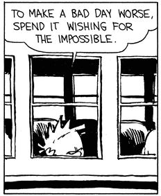
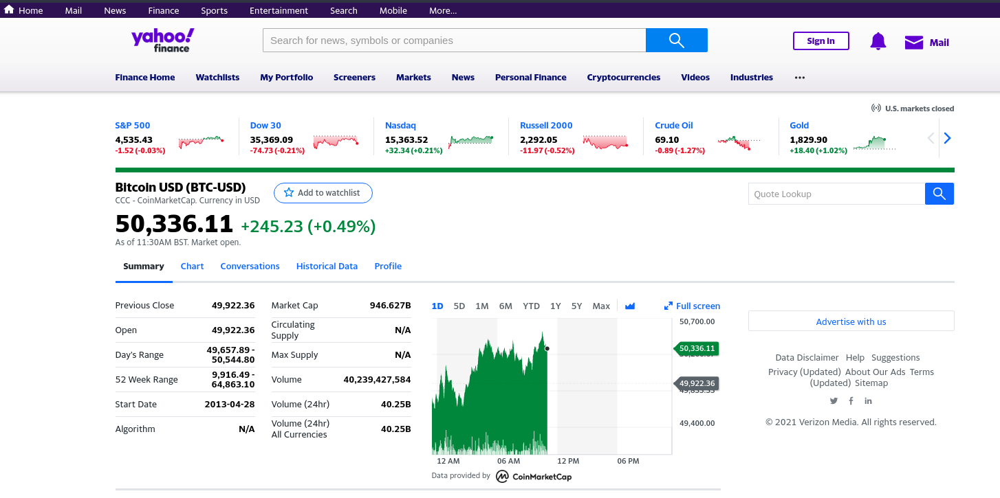

CS460 : Project Proposal
Creating an AI bot to trade FOREX in the Stock Market
Submitted as part of course requirements for CS460: Machine Learning, Fall 2021
Offered by the School of Computer Sciences,
National Institute of Science Education and Research,
Bhubaneswar.
Course Instructor: Dr. Subhankar Mishra
Faculty Mentor: Dr. Amarendra Das
Index
Idea and Motivation
Not even fifteen years back, it was an open question - how to train a machine to recognize handwritten digits with high precision. Fast-forward 10 years and within my time on Earth, Machine Learning has conquered the industry: it is at the heart of today’s high-tech products, ranking our Google search results, powering our smartphone’s speech recognition, recommending us what to watch on Netflix, and beating the world champion at the game of Go. Before we know it, it will be driving our taxis.
A computation takes information and transforms it, implementing what mathematicians call a function....If you’re in possession of a function that inputs all the world’s financial data and outputs the best stocks to buy, you’ll soon be extremely rich.
Many of us have played a game of monopoly. Who doesn't want to be rich? There are tons of financial data. Can we unearthen some Gems, with the help of computers? Find the right algorithm to automatically and successfully trade in financial markets, it's assured that you are the next Richie Rich. In this project, we would attempt to do exactly that, using open source software, open data and an online trading platform, equipped only with a notebook, desktop computer and a reliable internet connection. Sounds ambitious... or impossible right?

When there are portfolio advisers offering investment advice to clients, what stops a machine from offering investment advice. We hope to train a model with sufficient data so that it can offer reliable advice for FOREX trading.
Why FOREX?
- It operates continuously, twenty-four hours a day except weekends (22:00 GMT Friday (New York) to 22:00 GMT on Sunday (Sydney)), so no dearth of real-time data
- A variety of factors affect exchange rates making it a quasi-random process, where Monte Carlo methods can be used during simulations
- It's huge trading volume and geographical dispersions make it less prone to shocks and scares.
- It is referred to as the 'market closest to ideal of perfect competition', notwithstanding currency intervention by central banks.
Dataset
Clearly, data beats algorithms. Without comprehensive data, you tend to get non-comprehensive predictions.
In our project, we would be mainly concerned with structured data (numerical, tabular data), both historical (like end-of-day closing values for the value of BTC/USD) and real-time. (intraday 1-minute-bar data for the exchange rate of USD/EUR). An We would start with a trading idea or hypothesis that needs to be (back)tested based on historical financial data.
While there have been helpful open-source (financial) datasources available for some years (such as Google Finance), there are not too many left now, in 2021. One of the obvious reasons for this trend might be the ever changing terms of data, the new virtual gold, licensing agreements.
One notable exception Yahoo Finance, a platform that aggregates financial data, downloadable in .csv format.

To create a bot that executes real-time trades, real-time structured data is required. A Demo Account at the Oanda Trading Platform would be used to stream, in real time, the timestamps and bide quotes for FOREX.
Work Division
| To be done by Dinesh | To be done by Adittya |
|---|---|
| Presentation in LaTeX | Reports as .html files |
| Collecting Data, Vectorizing it | Live Streaming of Data |
| Backtesting of Model | Automation, tuning models |
| Back-end implementation | Front-end development |
| Use of libraries wherever possible |
By Midway
By midway, we expect to implement some currently being used machine learning models like ARIMA (Auto-Regressive Integrated Moving Averages), and SARIMA (Seasonal Auto-Regressive Integrated Moving Averages with Exogenous factors) methods mentioned in the underlisted papers. We would try to use models from Python libraries like PyAlgoTrade and Zipline. Hopefully, our model would be able to make rough guesses for the direction in which the exchange rate would move by midway.
Baselines to Implement
Can machines powered by artificial intelligence act as trading bots that consistently generate trade profits above some human or institutional benchmark?
Nobody knows.
| Step | Tesla Car | Trading Bot |
|---|---|---|
| Training | Tesla trains the car in a simulated virtual and real-life recorded environment | Traning the bot with historical and simulated data from financial markets |
| Risks | Collisions | Large Losses |
| Deployment | Control the car hardware with trained AI, deploy on the street | Let the bot trade on a trading platform |
What we are proposing is nothing novel. Some mutual funds, like The Voleon Group already claim to exclusively rely on machine learning to manage their investor's capital. The Voleon Group is reported to have more than $6.5 billion in assets under management by the end of 2020. However, the dismal performance of the fund's returns of 7% for the year 2019, during which the Standard & Poor's 500 Stock Index rose by almost 30% makes it difficult to rely on Machine Learning only to tame the financial markets.
Expected Results
Here's a rough outline of what we plan to do :
- Retrieve the required financial data (mainly, exchange rates) from public, open source data sources, like Yahoo Finance
- Vectorize the data to analyse it using NumPy and pandas, possibly
- Test different trading strategies: Simple Moving Averages, Momentum Trading, Mean Reversion (we would also test some ideas that pop up in our minds too)
- Generate (accurate) market predictions using the model developed by machine learning, using libraries PyAlgoTrade and Zipline if required
- Stream data in real time for processing, using socket possibly
- Implement the model as an automated trading bot with a trading platform (maybe OANDA).
We try to compare our expected results in this project with some more popular applications :
| Domain | Agent | Goal | Approach | Reward | Obstacles | Risks |
|---|---|---|---|---|---|---|
| PUBG Gaming | Virtual AI player | Getting a low rank | Reinforce- ment learning? | Points, Rank | Competing human players | Virtually none! |
| Tesla Car | Self-driven car | Driving on streets | RL in real world environment | Fewer accidents | Vehicles on roads | Collisions, injury |
| Trading | Trading bot | Maximising long term returns | RL in a virtual trading environment | Financial returns | Unpredict- able markets | Your wealth getting a haircut |
We expect a trading bot that can take autonomous desicions. Regarding it's performance, well let's see...